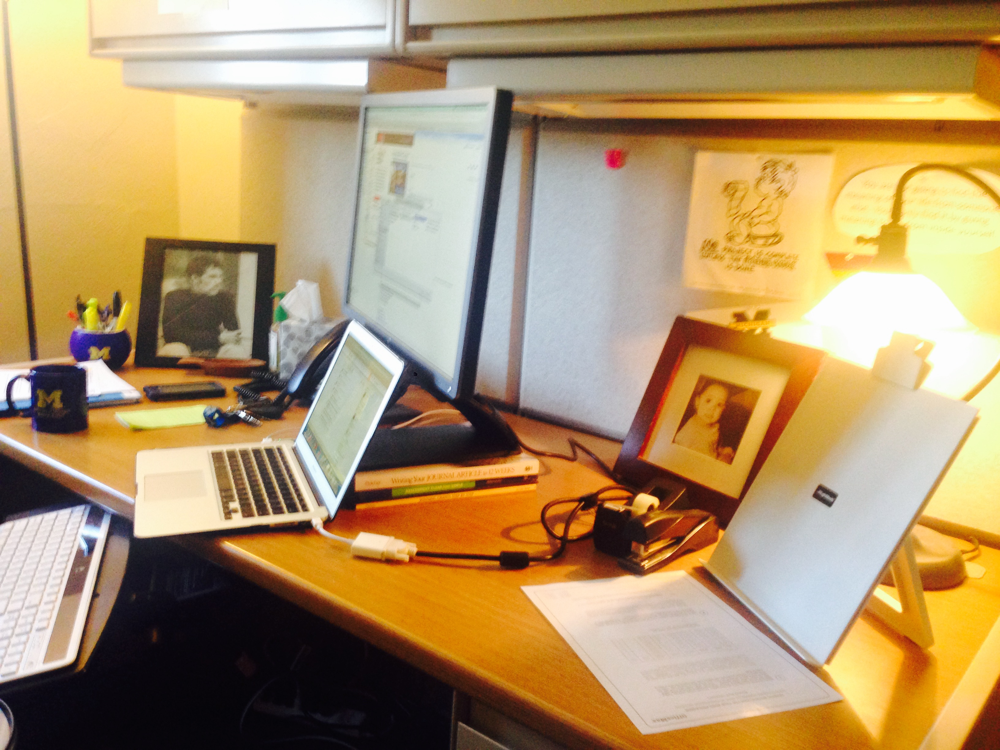
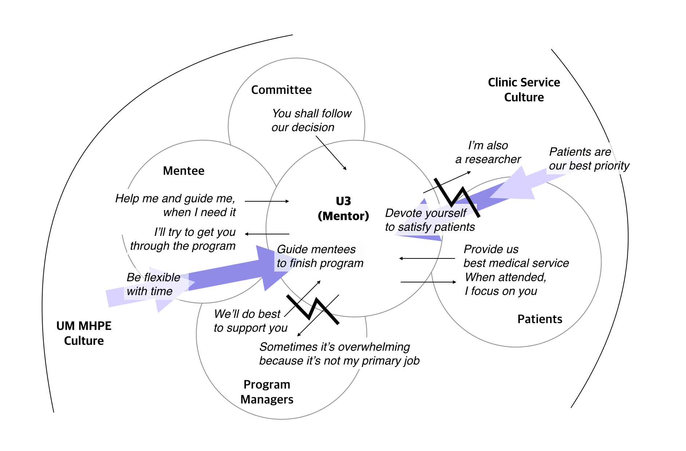
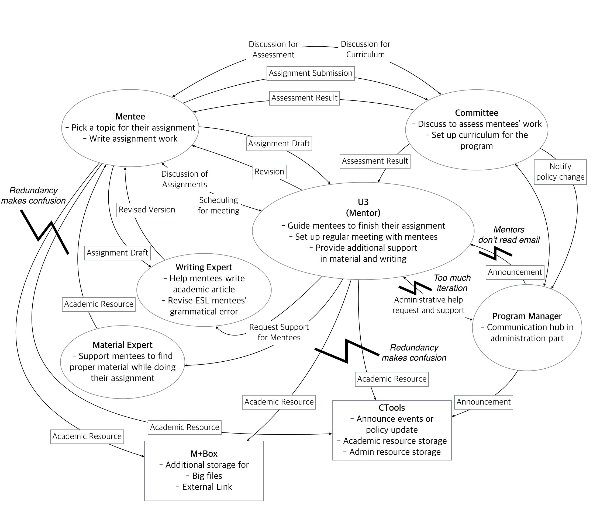
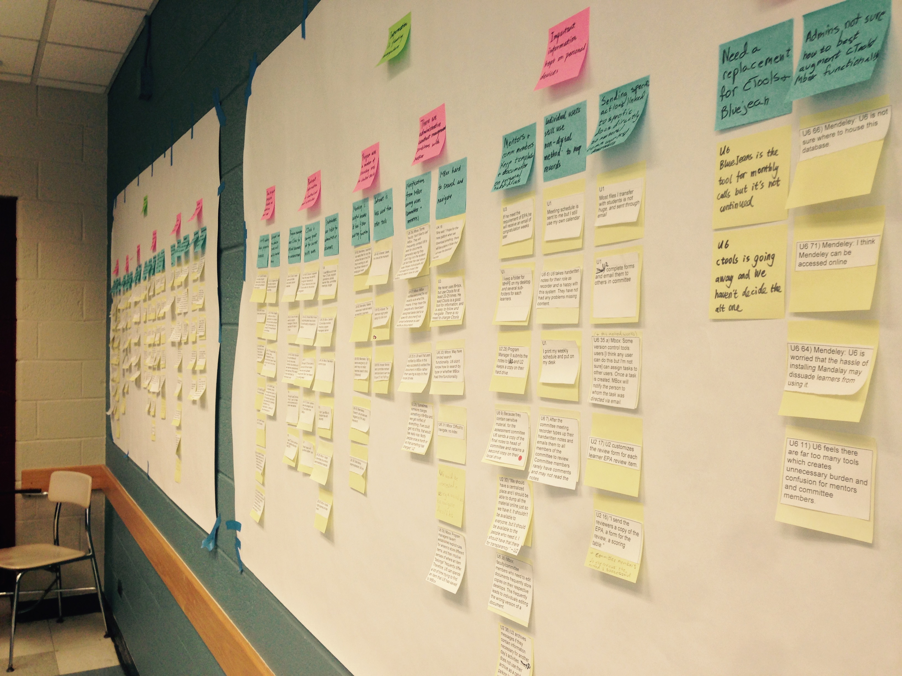
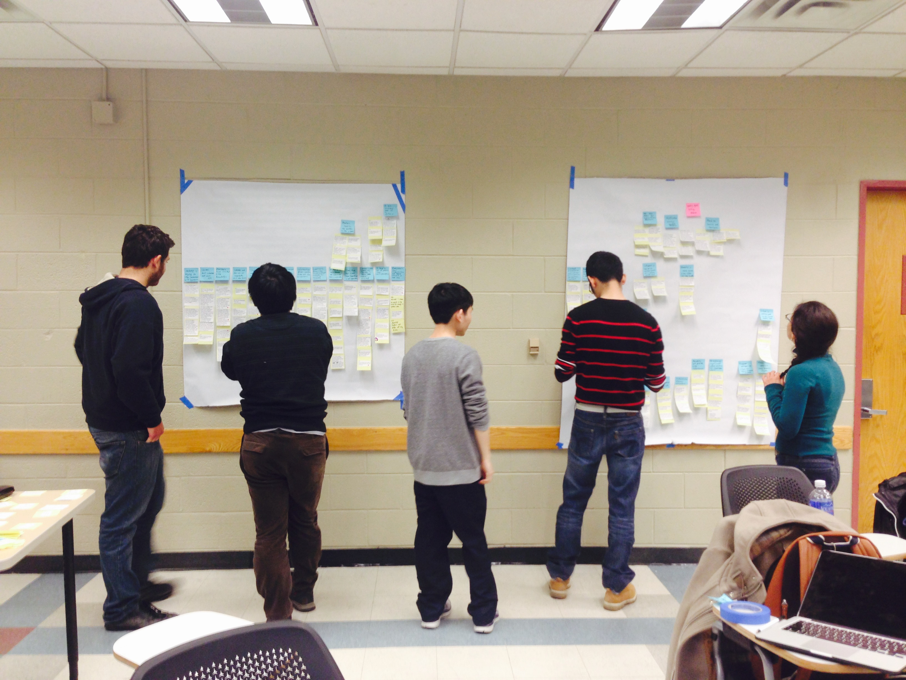
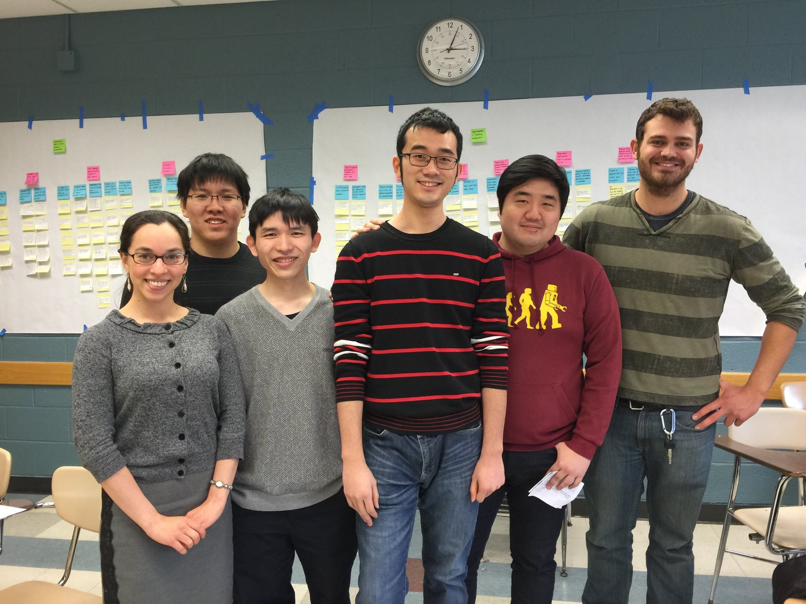

Contextual Inquiry Project with client: University of Michigan Master of Health Professions Educaiton Department
We have conducted 6 contextual inquiries with users and stakeholders in UM MHPE.
It includes on/off-campus students, professors, and school administrators. We visited
the place where they work or study to acquire most from the interview process.
In addition to interview, we could probe out their environment where interaction happens.
Check here to see complete interview protocol

Room of one interview participant. See what is on his desk, which tools he uses for working.
Taken by Jeseok Lee
Mentors in UM MHPE are basically researchers, and are also working for external clinic
as well. In our contextual inquiry with one of mentors, she identified herself as a
researcher. Her office is located in Ann arbor, but she also works in a clinic in
Detroit. In addition, she has to guide her two mentees regularly. To sum up, they have
three other jobs at the same time. Based on the idea that they have different work place
and different influencers, I would like to analyze their job experience by employing
cultural model, and identify which influences they receive from and push back to each
cultural influencer.
In that sense, I draw two big area of culture: UM MHPE Culture and Clinic Service Culture.
Each area represents the field the user belongs to. Thus, Mentee, Program Managers, and
Committee are important influencers in UM MHPE Culture area. In Clinic Service area,
Patients are the most important influencer. Among several influencers, I grouped them
to show relatedness of them if they belong to same group. Two couples of big blue arrows
are influence that each Culture area gives to influencers and user. Small arrows represent
influence and push back happening between the user and influencers.

1. Cultural model for UM MHPE
Created by Jeseok Lee, Apple Keynote and Adobe Illustrator
In the flow model, I illustrated communication flow across the user and the people
coordinating with the user. In case of UM MHPE, mentors mainly communicate with mentees
and program managers. While interacting with mentee, they receive support from material
experts and writing experts. In addition, they receive important information from committee
if something happens.
To illustrate the relationship of mentor and mentee, there is no concept of course or class
in UM MHPE. Educational professional activities(EPA) is the curriculum that mentees have to
accomplish, and it is composed of series of writing assignments about each topic. Mentees are
supposed to be able to select a topic and conduct individual research on that. What mentors do
for mentees is helping them out to finish these assignments. Much of communication between
mentor and mentee is conducted through in person meeting. Otherwise, they use e-mail to
schedule meeting, send files, and ask urgent question.
If there is a need for additional help about academic resource or scientific writing,
mentors can request material experts or writing experts to help their mentee. They are
people who are hired for that specific purpose in the program.
After a mentee finishes the assignment, it will be notified to committee and going to be
assessed by them. Result of the assignment will be sent both to mentee and his/her mentor.
In this program, CTools is used as the most important source and archive of information.
Unlike usual CTools website consists as units of courses, UM MHPE has only one CTools
website for the whole program. Our interviewee mentioned that there are individual
sections categorized by each mentor. Every participant also uses CTools as a storage
for academic resource or assignment progress file. M+Box is also used for storing big
files or creating link to a file which should be accessible to people outside the university.

2. Flow model for UM MHPE
Created by Jeseok Lee, Apple Keynote and Adobe Illustrator
Click
here to see the full report for interaction model.
Based on the contextual inquires and models, we could build up affinity wall deduct more
findings.

Affinity wall, Group Work

Affinity wall, Group Work

Affinity wall, Group Work